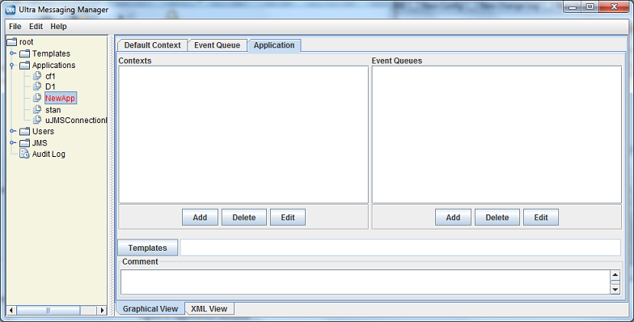

You can use the UMM GUI to create XML format configuration files if you do not want to create them manually with an XML editor. UMM stores any configuration information you create with the UMM GUI in the UMM configuration database. Normally, UM applications contact the UMM Daemon to obtain their configuration information. However, the GUI also offers a method to dump the XML data to a file which could be loaded by an UM application without involving the daemon.
See UMM Daemon Overview for information about starting the UMM daemon and GUI.
Using UMM With a UM Application <-
The following procedure describes a general approach to using UMM to serve license and configuration values to your applications. This procedure contains general guidelines for configuring UM for the application SENDAPP.
-
Start the UMM Daemon and the UMM GUI. See UMM Daemon Overview.
-
Create any desired templates to hold configuration option values shared by multiple applications or primitive UM objects (context, source, receiver, wildcard receiver or event queue). See Creating Configuration Templates.
You can create and apply multiple templates to applications and primitive UM objects, however, if the same option appears in multiple templates, the option value in the last template overrides the option value in the previous template. See Applying Templates.
-
Create an application for your UM application and apply any relevant templates created in the previous step. Just for this example, name the application, SENDAPP. See Creating Application Configurations.
-
For the SENDAPP application, configure the application's default context by applying any relevant templates and setting context option values.
-
Since our example application, SENDAPP is a sending application, also configure its Source options. See Configuring Sources. (If this was a receiving application, you would configure Receiver or Wildcard Receiver options.)
-
If your application creates multiple contexts, repeat the previous two steps for each context.
-
Configure the default Event Queue for SENDAPP, applying any relevant template and setting option values.
-
Assign user Admin to SENDAPP and give it the password,
secret. See Managing Users. -
Set the following environment variable on the machine where SENDAPP runs.
set LBM_UMM_INFO to SENDAPP:Admin:secret@10.29.3.95:21273See also Connecting Your Applications to the UMM Daemon. - Start SENDAPP.
UMM Menus <-
The following table explains the UMM menu selections:
| Menu | Selection | Description |
|---|---|---|
| File | New | Allows you to create a new Application, Template or User. |
| File | Save | Saves the current Application, Template or User record. |
| File | Save All | Saves all the records that you have created or edited. |
| File | Revert | Revert to the previously saved version of the Application, Template or User. |
| File | Save To File | Save the Application, Template or User record to an XML file instead of the database. This selection allows you to use the UMM GUI to configure applications but not use UMM Daemon when running your applications. After saving an application's configuration to a file, you can use the |
| File | Exit | Close the UMM GUI. |
| Edit | Duplicate | Copy the selected Application, Template or User record to a new record. |
| Edit | Delete | Delete the selected Application, Template or User record(s). |
Creating Configuration Templates <-
You can define option templates that can be applied in application configurations. Multiple templates can be applied to any primitive UM object or application. Templates can be applied to most tags including '<application>', '<contexts>', '<context>', '<sources>', '<receivers>', '<topic>', and '<wildcard-receivers>'.
-
Click on Templates in the object tree in the left pane and then right-click or click on the File Menu.
-
Select New and then select Templates from the drop-down menu.
-
Enter the Template Name and click OK. The Template window appears in the right pane:
Template Window 
-
Click on the Context tab and then click on Options button. A list of Context scope options appears:
Context Options 
-
Click on the checkbox next to the desired context options. Click OK. The selected options appear in the Template/Context pane.
-
For each option, click on the Value field, select or enter a new value and press ENTER:
Setting Option Values 
-
If desired, set permissions for the option's values. See Setting Permitted and Restricted Values.
-
Repeat Steps 4-7 for Source Options.
-
Repeat Steps 4-7 for Receiver Options.
-
Repeat Steps 4-7 for Event Queue Options.
-
Repeat Steps 4-7 for Wildcard Receiver Options.
-
Click XML View to verify your entries.
- Right click on the object name in the left pane or click on the File Menu. Then click Save.
Using the Order Attribute <-
Any option used in a template or directly configured for an application has an order attribute expressed with two values in one of two sequences:
or
The order attribute allows you to permit or restrict more than one value for the option. The order, allow,deny essentially means "allow what you specify,
deny everything else." The order, deny, allow means "deny what you specify, allow everything else." The default order is 'deny,allow'. If you specify nothing, the default rule executes, ignoring the option's default value. Order of appearance of rules is not significant.
Using the Deny,Allow Order <-
The example below allows any transport type except for LBT-IPC or LBT-RDMA.
The procedure below shows how to accomplish this in the UMM GUI. Refer to the composite screen image following the procedure.
-
For the source option, transport, click in the Ordering box and select '
Deny,Allow'. -
Click the Edit button. The Permissions Window appears.
-
Click Add and type LBT-IPC.
-
Click again on Add and type LBT-RDMA.
-
Click OK.
Permissions window 
Using the Allow,Deny Order <-
You could accomplish the same restriction shown in Using the 'Deny,Allow' Order with the next example.
The procedure below shows how to accomplish this in the UMM GUI. Refer to the composite screen image following the procedure.
-
For the source option, transport, click in the Ordering box and select '
Allow,Deny'. -
Click the Edit button. The Permissions Window appears.
-
Click Add and type TCP.
-
Click again on Add and type TCP-LB.
-
Click Add and type LBT-RU.
-
Click again on Add and type LBT-RM.
-
Click OK.
Permissions Window 
Setting Permitted and Restricted Values <-
-
To use the Order attribute for an option, click on the Order field and select either Allow,Deny or Deny,Allow (default).
-
Click on the Edit button in the Permissions column. The Permissions dialog box appears.
-
To add an option value with a specific permission, click Add. A permission row appears.
-
Select the permission from the Allow,Deny column.
-
Enter the option value in the Value column.
-
Repeat Steps 3-5 for each additional option value that requires specific permissions.
-
Click OK. The Permissions dialog box disappears and your entries appear in the Permission column for the option.
-
Click XML View to verify your entries.
- Right click on the object name in the left pane or click on the File Menu. Then click Save.
Options with Value Ranges <-
Some options can specify a range of values. You can specify both allow and deny rules to allow one or more values of a larger range. The next example allows a single multicast address out of a range of otherwise allowable addresses.
Address 239.191.10.15 matches both an allow and deny rule, but since the order indicates that allow is the default, the value is allowed.
Creating Application Configurations <-
You can configure UM Configuration Options for specific applications. You can attach a template or select any number of individual options. Separate applications can have the same options, but with different values. You can also configure an application with multiple contexts or event queues and apply an order attribute to easily vary similar configurations.
-
Click on Applications in the object tree in the left pane and then right-click or click on the File Menu.
-
Select New and then select Application from the drop-down menu.
-
Enter the Application Name and click OK. The initial, blank Application window appears.
New Application Window -
Click on the Application tab. The Application window appears.
Application Window  -
Add the additional contexts and event queues required by this application.
- Click on the Add button and enter the context's or event queue's name.
- Click OK.
- Repeat the above steps for every additional context and event queue.
-
If you wish to apply a template to the application, click on the Templates button. The Templates window appears.
Templates Window 
See Applying Templates.
-
Click on the Comment text window and enter any notes or comments about the application.
-
Click on the Default Context tab.
Default Context Window 
-
If needed, change the default Ordering for All Contexts to '
allow,deny'. See also Using the Order Attribute. -
Configure the application's Default Context.
- If you wish to apply a template to the Default Context, click on the Templates button and apply the template(s).
- Configure the Sources. See Configuring Sources.
- Configure the Receivers. See Configuring Receivers.
- Configure any Wildcard Receivers. See Configuring Wildcard Receivers.
- Configure the options for the Default Context by clicking on the Options button and selecting the options. See Creating Configuration Templates for more on configuring options.
- Set the Rule attribute, if needed.
-
Repeat the above step for all contexts in the application.
-
Click on the Event Queue tab. The Event Queue window appears.
Event Queue Window 
-
If needed, change the default Ordering for All Event-queues to '
allow,deny'. See also Using the Order Attribute. -
Configure the application's Default Event Queue.
- If you wish to apply a template to the Default Event Queue, click on the Templates button and apply the template(s) queue's name.
- Configure the options for the Default Event Queue by clicking on the Options button and selecting the options. See Creating Configuration Templates for more on configuring options.
- Set the Rule attribute, if needed.
-
Repeat the above step for all Event Queues used in the application.
-
Right click on the object name in the left pane or click on the File Menu. Then click Save All.
- Click on the XML View tab to review the actual XML configuration for the application. (Template options and values do not appear in this view.)
Configuring Sources <-
You can configure an individual UM source using a topicname or a topic pattern. Configuring a pattern allows you to easily specify option values for all the topics that match the pattern instead of configuring individual topics (topicname) with the same options and values. (You could also apply a template to the context that has all the source scope option values.) When using a topic pattern, the following rules apply:
- Topics that match both a topicname and a topic pattern use the option values from the more specific match, i.e. the topicname.
-
If multiple patterns match a given topic, UMM uses the first pattern matched in the XML configuration file. In the example below, when your application creates a source for topic SRM, it will use the LBTRM transport, which is configured for the first pattern, '
*R*', and not the TCP transport which is configured for the second pattern, '*RM'.<sources order="deny,allow"><topic pattern="*R*" rule="allow"><options type="source"><option default-value="lbtrm" name="transport"/></options></topic><topic pattern="*RM" rule="allow"><options type="source"><option default-value="tcp" name="transport"/></options></topic></sources>Use the following procedure to configure options for an individual UM source:
-
Click on the Sources tab on the left of the context pane. An empty Sources window appears.
Sources Tab 
-
If needed, change the default Ordering for All Sources to
'allow,deny'. See also Using the Order Attribute. -
Click on the Add button. The Source window appears.
Source Window 
-
Enter the topicname or a topic pattern.
-
Select the Type, Topic Name or Pattern from the drop-down menu.
-
Click on the checkbox next to the desired options for the topic or pattern. Click OK. The Sources window appears with the selected options.
Sources Window -
Adjust the option values. See Creating Configuration Templates for more on configuring options.
-
If you wish to apply a template to the source, click on the Templates button and apply the template(s).
-
Set the Rule attribute, if needed.
- Repeat Steps 3-9 for all topics and topic patterns for the context.
-
Configuring Receivers <-
Use the following procedure to configure options for an individual UM receiver:
-
Click on the Receivers tab on the left of the context pane. An empty Receivers window appears.
Receivers Tab 
-
If needed, change the default Ordering for All Receivers to '
allow,deny'. See also Using the Order Attribute. -
Click on the Add button. The Receiver window appears.
Receiver Window 
-
Enter the topicname or a topic pattern.
-
Select the Type, Topic Name or Pattern from the drop-down menu.
-
Click on the checkbox next to the desired options for the topic or pattern. Click OK. The Receivers window appears with the selected options.
Receivers Window 
-
Adjust the option values. See Creating Configuration Templates for more on configuring options.
-
If you wish to apply a template to the source, click on the Templates button and apply the template(s).
-
Set the Rule attribute, if needed.
- Repeat Steps 3-9 for all receiver topics and topic patterns for the context.
Configuring Wildcard Receivers <-
To apply XML configuration to a wildcard receiver, be sure both the pattern and pattern-type match exactly. You may also specify both receiver and wildcard receiver options.
Use the following procedure to configure options for an individual UM wildcard receiver:
-
Click on the Wildcard Receivers tab on the left of the context pane. An empty Wildcard Receivers window appears.
Wildcard Receivers Window 
-
If needed, change the default Ordering for All Wildcard-receivers to '
allow,deny'. See also Using the Order Attribute. -
Click on the Add button. The Wildcard Receivers window appears.
Wildcard Receiver Window 
-
Enter the wildcard receiver Pattern.
-
Select the Pattern Type, pcre, regex or appcb from the drop-down menu. See pattern_type for more information about these option values.
-
Click on the checkbox next to the desired options for the topic or pattern. Click OK. The Wildcard Receivers window appears with the selected options.
Wildcard Receiver Options Window 
-
Adjust the option values. See Creating Configuration Templates for more on configuring options.
-
If you wish to apply a template to the source, click on the Templates button and apply the template(s).
-
Set the Rule attribute, if needed.
- Repeat Steps 3-9 for all wildcard receiver patterns for the context.
/n
Applying Templates <-
The Templates dialog box allows you to apply templates to applications or any primitive UM object and also to remove templates or change the order.
-
To apply a template, click on the Template Name in the left pane and click the Right Arrow. The template appears in the right pane. You can also hold down the Ctrl key to select multiple templates.
-
To remove a template already applied, click on the Template Name in the right pane and click the Left Arrow. The template disappears from the right pane.
- To change the order of the applied templates, click on the Template Name in the right pane and click the Up Arrow or Down Arrow to reposition the template.
You can apply multiple templates to applications or any primitive UM object. The order in which you attach templates determines the resolution of conflicting option values. The last instance of an option determines the value used. In the UMM GUI, this means the lowest option instance in the file.